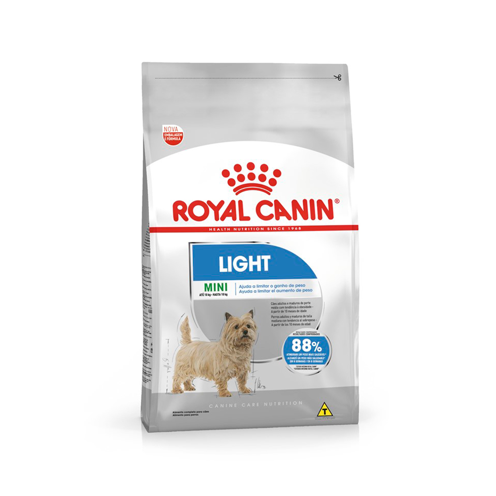
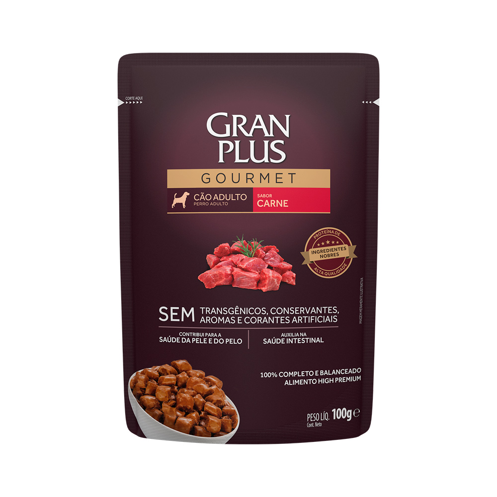
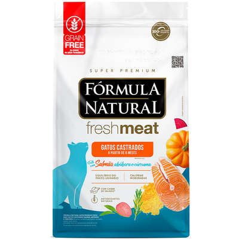

Rações Não Perecíveis
Oferecemos uma linha completa de rações não perecíveis para cães e gatos de todas as idades e portes. Produtos de marcas reconhecidas, com formulações balanceadas para garantir a saúde e o bem-estar do seu pet.
| Foto | Nome | Descrição | Valor |
|---|---|---|---|
|
 |
Ração Royal Canin Mini Light Adult 2,5 kg | Ração super premium para cães adultos de porte pequeno. Específica para pets de porte pequeno e com tendência à obesidade; Disponível em embalagem de 2,5 kg. | R$ 142,40 |
|
 |
Sachê Gourmet GranPlus para Cães Adultos - 100g | Alimento úmido 100% completo e balanceado. Não possui transgênicos, conservantes, aromas e corantes artificiais. Disponível em embalagem de 100 g. | R$ 3,90 |
|
 |
Ração Natural Fresh Meat Salmão para Gatos Castrados | Ração balanceada para gatos castrados, com proteínas de alto valor biológico Com antioxidantes naturais como vitaminas A, C, E, D3; Embalagem de 7 kg fracionada em pacotes de 500 g. | R$ 454,90 |